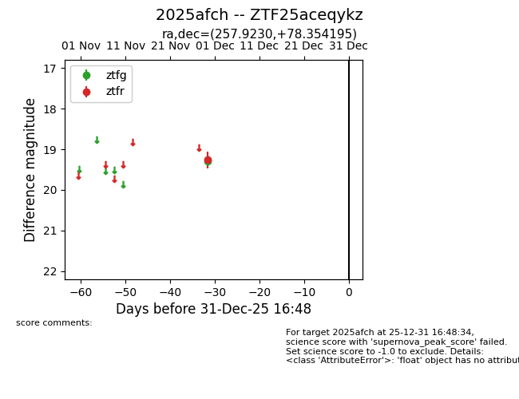
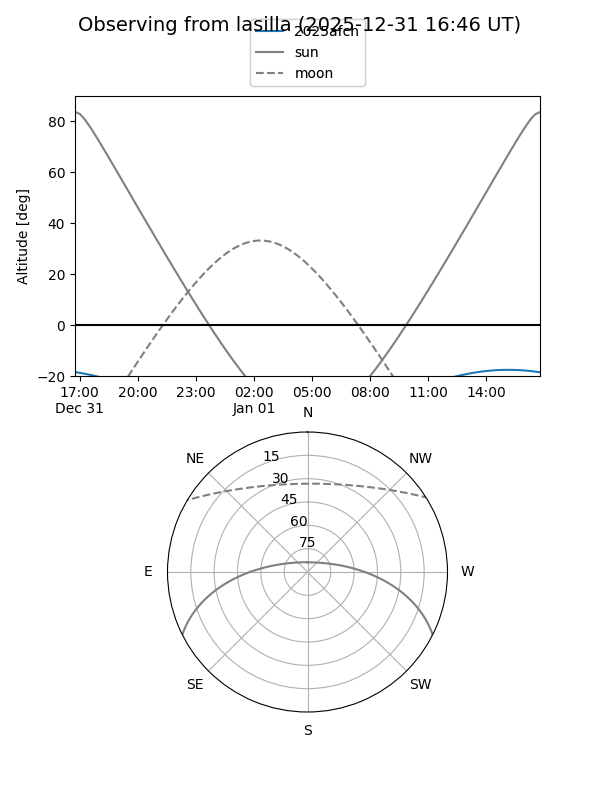
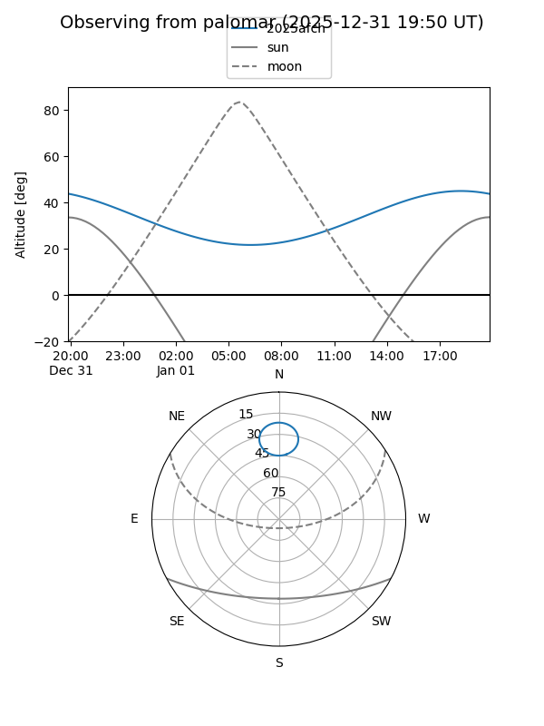

2025afch
Target 2025afch at 2025-12-18 11:17
Aliases and brokers:
FINK: fink-portal.org/ZTF25aceqykz
Lasair: lasair-ztf.lsst.ac.uk/objects/ZTF25aceqykz
ALeRCE: alerce.online/object/ZTF25aceqykz
TNS: wis-tns.org/object/2025afch
YSE: ziggy.ucolick.org/yse/transient_detail/2025afch
alt names
ZTF25aceqykz (ztf,fink_ztf)
2025afch (tns,yse)
Coordinates:
equatorial (ra, dec) = 257.9230,+78.35420
equatorial (HMS+DMS) = 17:11:41.52,+78:21:15.10
galactic (l, b) = (110.5367,+31.48945)
Photometry
last ztfg=19.30, ztfr=19.26
1 ztfg, 1 ztfr detections
Lightcurve

Visibility


Additional plots